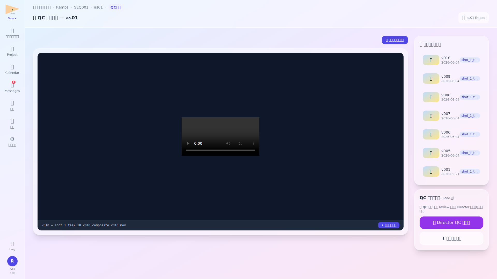

📸 画面

✨ 主な機能
- asset 自動再生 — URL ?asset_id=N で指定された asset を mp4/mov player で表示 (img も対応)
- パンくず — プロジェクト › marukome › sq01 › c05 › Compositing › QC確認 (4 階層 full name)
- 👁 視点切替 (admin 専用) — Director / PM / Lead / User の role 別 UI を 即時 preview (admin のみ・URL ?as_role=N)
- Director / PM / Admin の判定 block — ✅ Approve + コメント / 🔁 Retake link (task.status='review' で活性)
- Lead / Lighting Lead の上申 block — 📤 Director QC へ上申 (部内 review 済前提 + mention 必須対応)
- SHOT/task thread link — ヘッダー右上「💬 c05 Compositing task thread」で messages 連動
- version 履歴サイドバー — 過去 version サムネ click で切替・比較モード対応
🛠 操作方法
- msg の ▶ QC ビューアで確認 緑ボタン click → /qc/{shot_id}?task_id&asset_id
- メイン player で asset 確認 + version 履歴 click 切替
- Director: コメント入力 → ✅ Approve → SHOT thread に「✅ Approved」通知 + task.status → completed
- Director: 🔁 Retake → /director_retake_input?shot_id&task_id 遷移 → リファレンス添付可
- Lead: 📤 Director QC へ上申 → mention で代替担当指定 → SHOT thread に通知